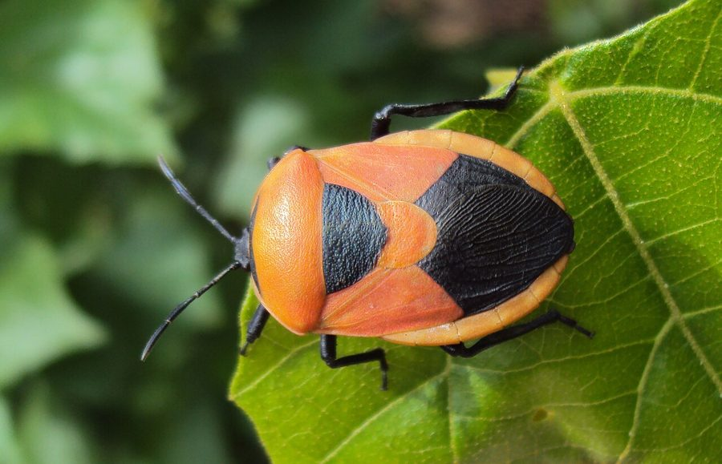

रेड पम्पकिन बगRed Pumpkin Bug
Coridius ianus · Pyrrhocoridae · INS-0184

- Scientific name वैज्ञानिक नाम
- Coridius ianus (Dallas, 1852)
- Family कुल
- Pyrrhocoridae
- Hindi हिंदी
- रेड पम्पकिन बग
- Local names स्थानीय नाम
- red pumpkin bug, bug
- Status here यहाँ की स्थिति
- native
- Movement आवागमन
- Resident, here all year
- Known from कहाँ दर्ज
- Others have published records from the Basti–Ayodhya districts बस्ती–अयोध्या के ज़िलों से दूसरों के प्रकाशित अभिलेख
- IUCN IUCN
- not evaluated
- Review समीक्षा
- audited and independently read
When to look कब देखें
Expected mainly in January, March, April, May, June, July, August, September, October, November. मुख्यतः जनवरी, मार्च, अप्रैल, मई, जून, जुलाई, अगस्त, सितंबर, अक्टूबर, नवंबर में अपेक्षित।
Tell it apart from इनसे अलग पहचानें
रेड पम्पकिन बग / Red Pumpkin Bug
Coridius ianus (Dallas, 1852) — Pyrrhocoridae
रेड पम्पकिन बग — लाल रंग की एक कीट जो कद्दू, तरबूज़, और दूसरी सब्जियों की पत्तियों को चूसकर खाती है। ग़र्मी के आने के साथ यह कीट गाँवों की बागों और खेतों में बहुत संख्या में दिखने लगती है। इसके शरीर पर काली पट्टी या धारियाँ होती हैं, जो इसे पहचान देती हैं। यह कीट पत्तियों को सुखा देती है, और पूरा पौधा मुरझा सकता है। गाँवों में इसे दूर करने के लिए यूरिया का घोल छिड़का जाता है या हाथ से इसे पकड़ा जाता है।
Quick Identification त्वरित पहचान
| Feature | Description |
|---|---|
| Size | Medium-sized bug, 10–14 mm long |
| Colour | Bright red to orange-red, with black markings or bands |
| Body shape | Oval, somewhat flattened; robust |
| Wings | Fully developed and functional |
| Head | Small; dark or black; with pale antennae |
| Scutellum | Dark triangular patch behind the pronotum |
| Legs | Red or reddish-black; relatively robust |
| Antennae | Four-segmented; relatively long |
Field tip: On pumpkin, squash, and melon plants in spring and early summer, look for small bright red bugs with black markings. They often aggregate on leaves and feed in clusters. The aposematic (warning) colouration is distinctive. Unlike many other red bugs, this one feeds primarily on cucurbit crops.
हिंदी — कैसे पहचानें: लाल कीट, काली पट्टियों वाली। कद्दू, लौकी और तरबूज़ की पत्तियों पर झुंड में दिखता है। पत्तियों को सुखा देता है।
Morphology आकारिकी
Biometrics:
| Measurement | Range |
|---|---|
| Body length | 10–14 mm |
| Body width | 6–8 mm |
| Head width | 2–2.5 mm |
| Antennae | 5–6 mm |
Colour pattern: Bright red to orange-red dorsal (upper) surface with black or dark markings. The head is dark brown to black. The scutellum (shield-like plate between the wings) is dark. The pronotum shows red coloration with variable black patterning — sometimes a black band or stripes, patterns varying between individuals and populations.
Head: Small, dark-coloured; rounded. Compound eyes large and prominent, placed laterally. Ocelli (simple eyes) present.
Antennae: Four-segmented; relatively long and slender; mostly dark coloured.
Pronotum: Trapezoidal; mostly red with black markings (the pattern is variable). Wider posteriorly than anteriorly; anterior margin is straight to slightly rounded.
Scutellum: Dark brown to black; triangular; extends to about the midpoint of the hemelytron.
Wings (hemelytron): Fully developed and functional. Corium (anterior portion) red with some black markings; membrane (posterior portion) lighter, semi-transparent. Hindwings clear and fully functional.
Legs: Red or orange-red; moderately robust; adapted for walking on plants.
Abdomen: Dorsal surface red, often with black lateral edges or bands; ventral surface black or dark red.
Rostrum: Piercing-sucking mouthpart; composed of four segments; used to pierce plant tissues and extract juices.
हिंदी: बहुत रंगीन कीट। लाल शरीर, काली पट्टियाँ। चपटा होता है।
Behaviour & Ecology व्यवहार और पारिस्थितिकी
The Red Pumpkin Bug is a phytophagous (plant-feeding) hemipteran that specializes on cucurbit crops and wild cucurbits. It is a significant pest of vegetable cucurbits in tropical and subtropical Asia, causing damage through phloem feeding and the injection of toxic saliva.
Feeding behaviour: Uses its piercing-sucking rostrum to penetrate the leaf tissues and extract phloem sap. Multiple bugs feeding on the same leaf cause chlorosis (yellowing), wilting, and eventual death of the leaf. Heavy infestations can kill the entire plant. The bug also injects salivary toxins during feeding, which exacerbate damage.
Host plant preference: Primarily feeds on cucurbits:
- Pumpkin (Cucurbita moschata, Cucurbita pepo)
- Squash (Cucurbita spp.)
- Melon (Cucumis melo)
- Cucumber (Cucumis sativus)
- Gourd (Luffa spp., Momordica spp., Lagenaria spp.)
Also feeds on other plants when cucurbits are unavailable, including okra, tomato, and other vegetables.
Aggregation: Highly gregarious; adults and nymphs aggregate on preferred plant parts, particularly leaves and stems. Aggregations of 20–50+ individuals per plant are common during peak season.
Dispersal: Adults can fly and move between plants and fields. Short-distance dispersal occurs when host plants are depleted or during the dry season.
Seasonality in eastern UP: Appears in spring (March–April) with warm weather; peak abundance in early summer (May–June) on spring-planted crops; declines in monsoon when host availability decreases; reappears in autumn on fall-planted crops; absent or scarce in winter.
हिंदी: झुंड में रहती है। पत्तियों को चूसती है, जिससे वह सूख जाती हैं। गर्मी में सब से ज़्यादा होती है।
Life Cycle / Phenology जीवन चक्र
| Stage | Duration | Notes |
|---|---|---|
| Egg | 4–7 days | Laid on or near host plant; gregarious egg-laying |
| Nymph (five instars) | 3–4 weeks total | Gregarious; feeding on host plant |
| Adult | 3–6 weeks | Feeding and reproduction; multiple generations per year |
| Generation time | 4–7 weeks | Shorter in warm season; longer in cooler months |
Seasonal pattern in eastern UP:
- December–February: Winter; minimal populations, mainly in irrigated areas with continuous crops
- March–April: Spring arrival; populations increase with warming and host plant planting
- May–June: Peak abundance; multiple crops being planted; rapid population growth
- July–September: Monsoon; declining populations as host availability decreases and natural enemies increase
- October–November: Autumn resurgence on fall-planted crops; populations recover
- Year-round in irrigated areas with continuous crop production
हिंदी: साल में कई पीढ़ियाँ होती हैं। गर्मी में सब से ज़्यादा होती है, बारिश में कम होती है।
Host Plants or Prey आहार
Primary hosts (cucurbit crops):
- Pumpkin (Cucurbita moschata, Cucurbita pepo)
- Squash and Marrow (Cucurbita spp.)
- Muskmelon (Cucumis melo)
- Cucumber (Cucumis sativus)
- Bottle Gourd, Ridge Gourd, Bitter Gourd (Luffa, Momordica, Lagenaria)
Secondary hosts (when cucurbits unavailable):
- Okra (Abelmoschus esculentus)
- Tomato (Solanum lycopersicum)
- Other vegetables
The bug feeds on leaf tissues, stems, and occasionally fruit. It sucks phloem sap and injects toxic saliva.
हिंदी: कद्दू, लौकी, तरबूज़, खीरे को खाती है। दूसरी सब्जियों को भी खा सकती है।
Predators / Natural Enemies शत्रु
- Parasitoid wasps: Some pentatomid parasitoid wasps; not specifically studied for Coridius ianus
- Predatory bugs: Larger reduviid (assassin) bugs and other predatory hemipterans
- Spiders: Jumping spiders, wolf spiders, and web-building spiders
- Birds: Particularly insectivorous birds during high-density aggregations
- Entomopathogenic fungi: Beauveria bassiana and Metarhizium anisopliae
- Predatory beetles: Ground beetles and lady beetles may feed on eggs and nymphs
The aposematic (warning) colouration suggests chemical defences or unpalatability, potentially providing some protection from predators.
हिंदी: ततैया, मकड़े, और चिड़ियाँ इसका शिकार करते हैं।
Agricultural / Human Relevance कृषि प्रासंगिकता
Major pest of cucurbits. The Red Pumpkin Bug is one of the most economically important insect pests of cucurbit crops in tropical and subtropical Asia, including India. Outbreaks can cause severe damage and complete crop loss if unmanaged.
Damage description: Feeding on leaves causes chlorosis (yellowing), wilting, and death. Whole plants can be killed by large aggregations. The salivary toxins injected during feeding exacerbate damage. Damage is particularly severe on young seedlings and during the early growth stage.
Control measures: Traditional: Intercropping with other crops; crop rotation; removal of crop residues; manual collection and crushing of bugs; burning of infested plants. Recommended practices:
- Use of neem-based and botanical insecticides (Azadirachta indica)
- Physical barriers (insect nets) on seedlings
- Hand-picking and crushing of aggregations (labour-intensive but effective on small farms)
- Application of inorganic insecticides (pyrethroids) where economically justified; contact local extension services for current recommendations
- Soil-applied systemic insecticides in some cases
No direct human use documented: The bug is not used for food, craft, or traditional medicine.
हिंदी: कद्दू और दूसरी सब्जियों को बहुत नुक़सान देती है। हाथ से भी पकड़ी जा सकती है। नीम का तेल भी काम देता है।
Expected Locally स्थानीय रूप से अपेक्षित
Not a field record. Written from published accounts for eastern Uttar Pradesh. No confirmed local sighting yet — if you have seen it, that is what the atlas needs.
अभी तक स्थानीय पुष्टि नहीं। यह विवरण प्रकाशित स्रोतों से है, किसी अवलोकन से नहीं।
Not a field record. This distribution is based on published records of the species' presence in Uttar Pradesh and the Gangetic plain. GBIF holds published records from the wider Awadh–Purvanchal plain and from Basti district.
ये दूसरों के प्रकाशित अभिलेख हैं, परियोजना के नहीं। यह पहले से स्थानीय संग्रहों में दर्ज है।
Expected in pumpkin, squash, melon, and cucumber fields throughout Basti district and eastern Uttar Pradesh, particularly from March to October. Outbreaks are more severe in years with favorable spring and early-summer weather. The bug is particularly damaging in spring-planted cucurbit crops.
A dated specimen or photograph of the bug feeding on cucurbit leaves would document a local record.
Distribution वितरण
Global range: Tropical and subtropical Asia; endemic to South and Southeast Asia. Now found throughout India and Southeast Asia where cucurbits are cultivated.
In India: Widespread in all vegetable-growing regions; recorded from all states with significant cucurbit cultivation.
In Uttar Pradesh: Recorded throughout the state in areas where cucurbits are cultivated; particularly abundant in eastern districts.
In Basti district / eastern UP: Common in vegetable gardens, pumpkin fields, and melon fields; peak abundance March–June and September–October. Presence depends on the availability of host crops.
Research Questions शोध प्रश्न
- कद्दू की अलग-अलग किस्मों में क्या रेड पम्पकिन बग को अलग-अलग पसंद है? कौन सी किस्म को यह सब से ज़्यादा नुक़सान देती है?
- What is the relative importance of salivary toxins versus mechanical damage in the wilting and death of infested plants?
- How far do adult bugs disperse from their emergence site before settling on a new host plant — what is the typical dispersal distance?
- डॉलर दर में (अर्थात्, कीटनाशक की कीमत के मुक़ाबले फ़सल की हानि) कौन सा नियंत्रण उपाय सब से अधिक किफ़ायती है — हाथ से चुनना, नीम का तेल, या कीटनाशक?
- What proportion of populations are parasitized by natural enemies in field conditions, and does this vary seasonally?
- क्या वह सब्जियाँ जो एक साथ लगाई गई हों (intercropping) उससे इस कीट की संख्या में कमी आती है?
Similar Species मिलती-जुलती प्रजातियाँ
| Species | Key Difference | Hindi |
|---|---|---|
| Cotton Stainer Bug (Dysdercus cingulatus) | Similar size and colour but feeds on cotton and hibiscus, not cucurbits; slightly different body shape | सूती कीट, कपास पर |
| Milkweed Bug (Spilostethus hospes) | Red and black but smaller (10–12 mm); specialized on milkweed, not cucurbits | आक का कीट, दूसरे पौधों पर |
Field rule: A medium-sized red and black bug aggregating on pumpkin, squash, melon, or cucumber leaves, with fully developed functional wings — this is the Red Pumpkin Bug. Red bugs on other plants belong to different species.
Taxonomy & Classification वर्गीकरण
Original description. The species was described by Dallas in 1852 in List of the Specimens of Hemipterous Insects in the Collection of the British Museum as Pyrrhocoris ianus. The genus Coridius was assigned later. Type locality is India.
Subspecies. No subspecies are currently recognised; the species is treated as monotypic.
Family and order placement. Order Hemiptera (true bugs); family Pyrrhocoridae (red bugs). Coridius is a small genus of tropical Asian bugs, primarily associated with cultivated plants.
Phylogenetic notes. The aposematic coloration and the ecological specialization on cultivated crops suggest a recent adaptation to human agricultural systems, though the insect also feeds on wild cucurbits.
IUCN status rationale. Not evaluated. The species is widespread and abundant; no conservation assessment is warranted.
हिंदी: भारत में खेती के साथ यह कीट विकसित हुई होगी। सदियों से कद्दू के साथ है।
Photo Gallery फोटो गैलरी
No photos yet — add field photos to media/species/red_pumpkin_bug/ and run node scripts/sync_photos.js.
Wanted photos:
- Individual on pumpkin or melon leaf
- Aggregation on a plant
- Damaged leaf showing wilting and yellowing
- Nymph for comparison with adult
References संदर्भ
- Dallas, W.S. (1852). List of the Specimens of Hemipterous Insects in the Collection of the British Museum. Part 1. British Museum, London. [original description as Pyrrhocoris ianus]
- Dolling, W.R. (1991). The Hemiptera. Oxford University Press.
- McPherson, J.E. (1982). Lygaeidae of the World. North Carolina State University Press, Raleigh.
- Sharma, R.K. & Verma, A.N. (1995). Control of insect pests of vegetable crops in India. Indian Farming 45(3): 18–25.
- GBIF Occurrence Data — Coridius ianus, India (2024).
- Richards, O. W. & Davies, R. G. (1977). Imms' General Textbook of Entomology. 10th ed. Chapman & Hall, London.
Source file: species/fauna/insects/red_pumpkin_bug.md